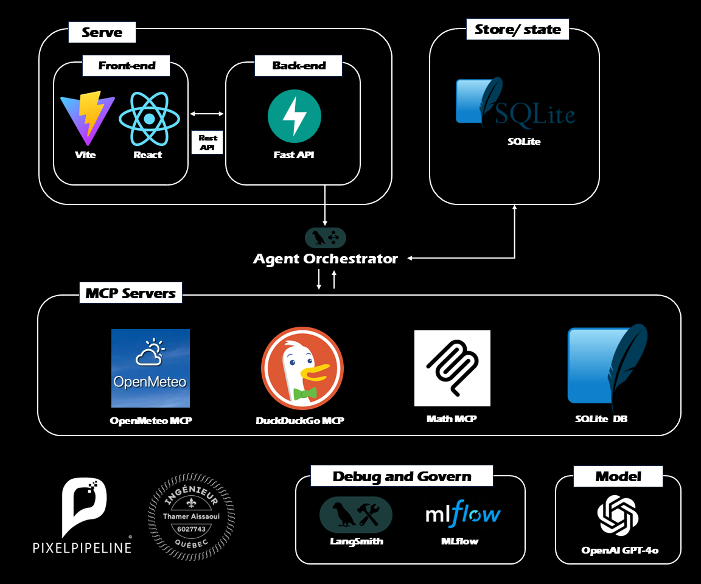

Enterprise Agentic Orchestration with MCP
A cutting-edge, agentic AI solution that dynamically connects reasoning engines to local and external tools using the Model Context Protocol (MCP). This application demonstrates how autonomous agents can securely interact with enterprise databases, live web search, and specialized services with full human-in-the-loop oversight.

Video Demonstration
The Architecture: Secure & Extensible Agentic Intelligence
Uses LangGraph and MCP to create autonomous agents that take action across the enterprise stack with human-in-the-loop oversight.
Dynamic Tool Integration
Agents dynamically discover and connect to real-time search, local databases, and custom tools via MCP.
Human-in-the-Loop (HIL) Safety
Proactively pauses sensitive execution for explicit user approval, ensuring complete control and security.
Real-Time Streaming & Transparency
Streams responses instantly and provides built-in tool visibility to foster user trust.
Enterprise-Grade Observability
Monitored by industry-standard MLOps tools to securely track every decision, prompt, and tool invocation.
Robust State Management
Maintains seamless conversation history and context across multiple autonomous steps.
Architectural Pattern: Layered Architecture (N-tier)
The system is built on a clean Layered Architecture (N-tier), ensuring separation of concerns:
- Presentation Layer: High-performance streaming interface for real-time interaction.
- Orchestration Layer: LangGraph engine managing human-in-the-loop workflows.
- Integration Layer: MCP acting as a dynamic bridge to external and local tools.
Functional Requirements
- Dynamic Tool Discovery: Connect to external and local tools via the Model Context Protocol.
- Autonomous Actions: Execute tasks like web search and database queries automatically.
- Human-in-the-loop: Pause for explicit user approval before executing sensitive tools.
- Real-time Streaming: Stream reasoning processes and tool invocations instantly.
Non-Functional Requirements
- Performance: speed and responsiveness via real-time streaming and robust state management.
- Security: protection against unauthorized access enforced by Human-in-the-Loop safety pauses.
- Usability: ease of use provided by transparent tool visibility and seamless conversation history.
- Reliability: system stability and availability maintained by rigorous MLOps observability.
- Scalability: ability to handle growth via dynamic MCP integrations.
- Maintainability: ease of updates and fixes using modular LangGraph architecture.
- Portability: ability to run in different environments due to standardized Model Context Protocol.